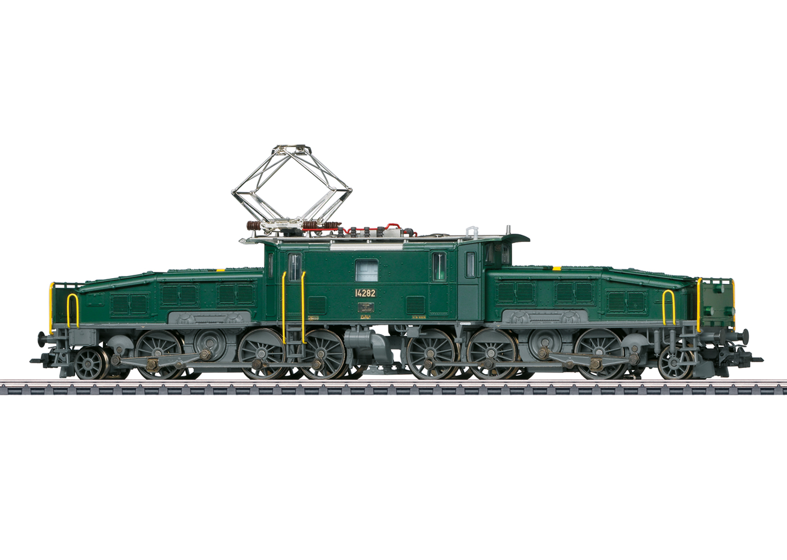

Die Lokomotive wurde nach 65 Jahren gefunden
Die Kroko Lok ist eine schöne Lokomotive.

Die Kroko Lok wurde 1922 gebaut und ist seit 1960 verschwunden.
Die Höhlenforscher, Denis Netry und Lea Organa,
haben in einer Höhle, die seit Jahren verscholene Kroko Lok,
in einer Höhle gefunden.